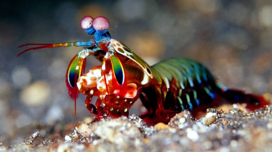
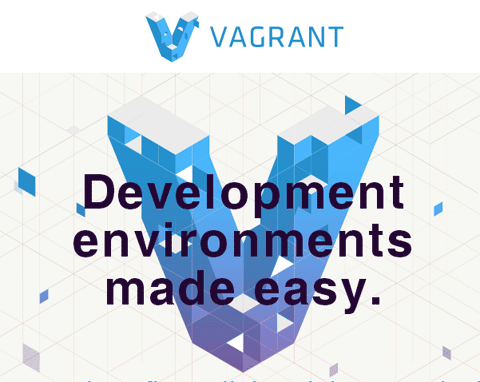

Your browser doesn't support the features required by impress.js, so you are presented with a simplified version of this presentation.
For the best experience please use the latest Chrome, Safari or Firefox browser.
Why Vagrant is Better than
a Mantis Shrimp
Asbury Agile ·
October 2014 ·
Bill Hazard
First, the Mantis Shrimp

Ok, so that's the story on
the Mantis Shrimp
Let's talk about Vagrant

What does vagrant do?
Vagrant allows us to quickly create virtual machines running any environment we want.
Like what?
The Steps:
- 1. Install VirtualBox
- 2. Install Vagrant
- 3. Grab a copy of vagrantpress from github
- 4. type "vagrant up"
Vagrant.configure("2") do |config|
config.vm.box = "trusty64"
config.vm.box_url =
"http://cloud-images.ubuntu.com/vagrant/trusty/current/trusty-server-cloudimg-amd64-vagrant-disk1.box"
config.vm.hostname = "mywordpressvm"
config.vm.network :forwarded_port, guest: 80, host: 8080, auto_correct: true
config.vm.provider :virtualbox do |vb|
vb.name = config.vm.hostname
end
config.vm.provision :puppet do |puppet|
puppet.manifests_path = "puppet/manifests"
puppet.module_path = "puppet/modules"
puppet.manifest_file = "init.pp"
puppet.options="--verbose --debug"
end
end
by positioning, rotating and scaling them on an infinite canvas
the only limit is your imagination
have you noticed it's in 3D*?